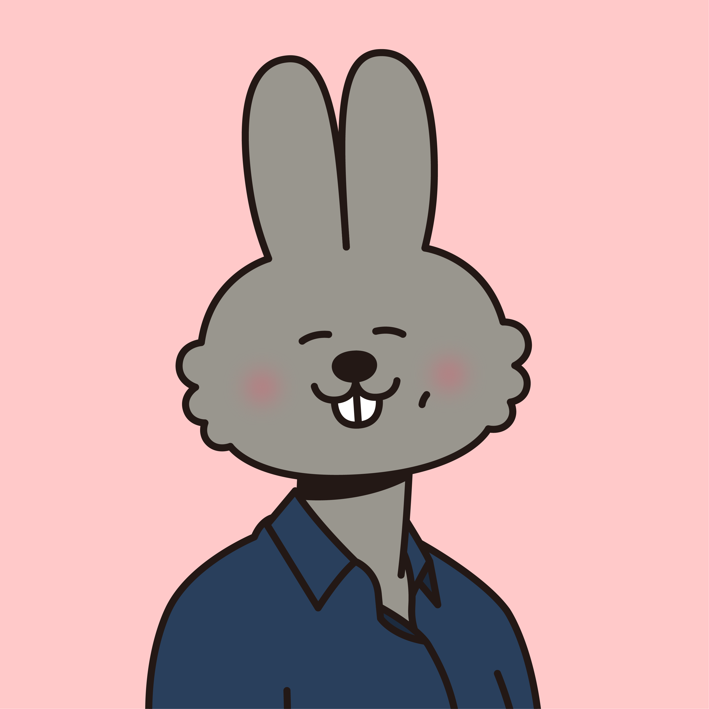

실무중심 디지털 전환
산업 현장에서 즉시 적용 가능한 디지털 역량을 갖춘 전문가를 양성합니다.
AID 30+ 집중캠프는 제주특별자치도 30세 이상 중소기업 재직자를 대상으로 AI · 데이터 · 협업 도구를 단기간에 익히고 현장에 적용할 수 있도록 설계된 프로젝트 기반 집중 교육과정입니다.
산업 현장에서 즉시 적용 가능한 디지털 역량을 갖춘 전문가를 양성합니다.
PBL(프로젝트 기반 학습) 중심으로 실제 업무 문제를 해결하며 학습합니다.
관광 · 농업 · 서비스 등 제주 산업 현장 데이터를 그대로 활용합니다.
업무 성격과 목표에 맞춰 선택할 수 있는 4개 과정입니다. 각 트렉은 2회차씩 운영될 예정입니다.
Gemini, ChatGPT, Claude 등을 다양하게 활용해 실무 업무 생산성을 끌어올리는 적용형 과정입니다.
산업체의 실제 문제를 주제로 AI를 활용한 데이터 분석으로 즉시 실무에 적용합니다.
제주 스타트업, 산업 현장에서 바로 사용할 수 있는 Notion 기반 협력 시스템을 직접 설계합니다.
Claude Code · Claude Cowork · Claude Dispatch 등을 통해 AX(AI Transformation)를 실현하는 심화과정입니다.
온라인으로 기초를 다지고, 오프라인에서 응용 · 심화 · 프로젝트를 진행하는 혼합형 학습을 진행합니다.
도구별 기본 기능을 자기주도 학습. 15분 단위 영상으로 반복 시청 가능.
실무 적용 기법을 팀 기반 실습으로 학습.
고급 기능을 활용한 미니 프로젝트 수행.
실제 현장 문제를 팀으로 해결하고 발표.
AID 30+ 집중캠프 이수자에게는 학습 이력을 공식 인증하는 디지털 배지가 발급됩니다. 교육부 · 국가평생교육진흥원(NILE)이 주관하는 정부 사업의 일환입니다.
* 디지털 배지는 학습 성과를 공식적으로 인정하는 온라인 증명 도구입니다. 지갑에 모으고, 필요할 때마다 꺼내 활용할 수 있습니다.
대학·기업·관공서에서 검증된 ㈜위니브의 강사진이 PBL · 실시간 피드백 · 자기주도 학습을 설계합니다.
프론트·백엔드부터 데이터·AI, 협업툴, 창업까지 — 폭넓은 실무 경험을 강의로 풀어내는 강사. 대학·기업·관공서 교육 경험과 개발 경험이 풍부합니다.

HTML/CSS부터 노코드 웹사이트 제작까지, 제주를 거점으로 다양한 학습자에게 노션과 프론트엔드를 가르쳐 온 강사입니다.
아래 일정은 확정 후 업데이트됩니다. 회차별 접수기간 · 온라인 / 오프라인 일정이 차례로 공개될 예정입니다.
* 일정 · 접수 링크는 사업 운영 일정에 따라 추후 공지됩니다.
교육비 100% 정부 지원 · 회당 30명 내외 선착순.
아래 버튼을 누르면 신청서(구글폼)가 새 탭으로 열립니다.